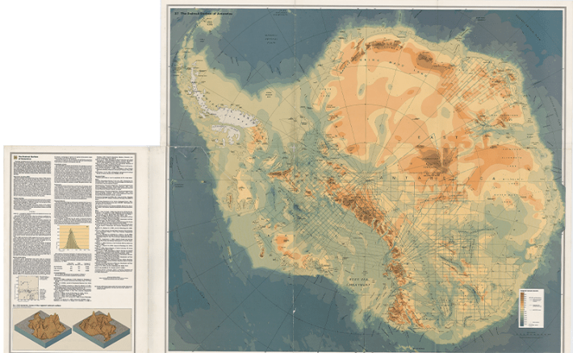
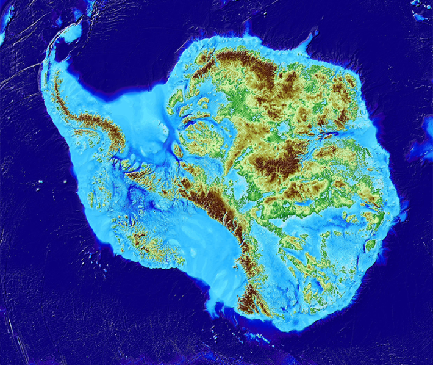

The ice is melting. The seas, we know, will rise—slowly at first, and then suddenly. Locked within the West Antarctic Ice Sheet alone is enough ice to raise global seas some 16 feet. And some areas, particularly the East Coast of the United States, are set to see far more water than others. But the barrier between the present and the future does not lie at the surface, where sun meets ice. The boundary lies in the cold, hard rumpled Earth below. It is this landscape that determines where ice flows, where seawater can infiltrate, and, ultimately, when sea level rise will go from modest to almost unfathomable.
Once upon a time, what lurked under Antarctica’s vast ice was unknown and, for all anyone could tell, unknowable. “We didn’t even know if it was a single continent,” says Martin Siegert, a University of Exeter glaciologist. Painting an intimate portrait of Antarctica’s buried landscapes has been difficult, tucked as they are beneath up to nearly three miles of ice, in a harsh and unforgiving environment.
Ice, at large scales, behaves in strange ways.
The first hints came from scattered rock outcrops and early drill cores. A handful of mid-20th-century geophysical surveys followed, and later radar began to sketch the shape of the land below.
As the picture sharpened over the decades, it revealed a hidden landscape of mountains, ridges, and canyons. And now, using massive troves of radar data and the fundamental laws of physics to divine what’s under the ice, Antarctica is known to have geologic complexity as rich as any other continent on Earth.
But perhaps more than any other continent, its profiles foretell the contours of our own trajectory. Newly detailed maps reveal key vulnerabilities and chokepoints that protect the West Antarctic Ice Sheet’s underbelly. Thanks to a few critical bumps and ridges, the edge of the ice sheet hasn’t yet slipped deeper into the basin, where the bed slopes inland and retreat could run away. But when it does, the world’s seas will rise swiftly.
In 1912, British explorer Robert Falcon Scott and his expedition, in a wretched retreat from the South Pole, perished on West Antarctica’s Ross Ice Shelf along with 35 pounds of fossil-bearing rocks—a remarkable dedication to science, or perhaps the kind of dogged determination that gets you into such fatal predicaments in the first place.
Previous expeditions had gathered fossil plants from Antarctica (and survived), but Scott’s team helped reveal traces of a broken-up supercontinent. Fossilized leaves from Permian swampy woodlands, or Glossopteris flora, matched specimens from surrounding continents. Aligned like jigsaw puzzle pieces, they revealed a broad swath of ancient forests—evidence of drifting continents, and decades later, the theory of plate tectonics. This was Gondwana, and its slow demise shaped Antarctica’s landscape and the ice it now holds.
Antarctica’s bedrock dates back more than 3 billion years, and its landmass has been incorporated into at least three supercontinents. Gondwana fragmented in the Jurassic 180 million years ago, with some rifting continuing to this day. Mountains rose as plates converged, and basins opened as they unzipped, at times forming shallow and warm carbonate seas. For impossibly long periods, the land simply eroded. Later, volcanoes spewed from a thin and rifted crust, not unlike North America’s Nevada looked some 17 million years ago.

FIRST LOOKS:The first hand-drawn, continent-wide Antarctic bedrock maps by the Glaciological and Geophysical Folio, released in 1983. These maps were the first attempt to reveal the shape of the bedrock below the ice, but they could not be directly fed into computer models. Credit: Glaciological and Geophysical Folio (1983).
Starting about 34 million years ago, ice spread slowly as the continent split from South America and drifted into polar latitudes. By 10 million years ago, spreading ice from eastern highlands filled West Antarctica’s rifted Gondwana basins, bowing down the land and creating unfathomable bedrock chasms—some reaching 8,200 feet below sea level.
East Antarctica, which lies primarily in the Eastern Hemisphere, is the stoic one—a mostly stable craton of primordial rock, resting high above the fray. Vast plateaus and the ice-obscured Gamburtsev Mountains mark its massive territory (which also includes the South Pole). Its ice sits perched above the sea and is relatively stable for now (the Wilkes Basin, lying below sea level, is one notable exception).
West Antarctica is another story. Separated from the eastern side of the continent by the Transantarctic Mountains, its crust is battered, rifted, and intruded with magma. Penn State glaciologist Richard Alley compares West Antarctica’s bedrock to the western U.S.’s Great Basin. Take a map of West Antarctica’s bedrock and rotate it roughly 180 degrees (and squint): The features—lineaments, mountains, volcanoes, canyons, and swales—coarsely align. The geologic history is similar, too. Nunataks of the Transantarctic Mountains poke from the ice like a geologic cousin to California’s Sierra Nevada, which tower over Nevada’s tectonically stretched country. On the opposite flank, near Antarctica’s western coast, is a rough and “ratty” range—akin to Utah’s Wasatch Range.
West Antarctica’s “marine grounded” ice reflects this restless foundation. Unlike its eastern counterpart, it rests in a deep bowl carved during Gondwana’s breakup, lying below sea level. It is the ratty range that is currently holding back the sea.
And this matters enormously. As warm ocean water reaches beneath floating ice shelves that fringe the continent, those shelves thin and weaken. This pushes the grounding line—the place where ice begins to float—inland into deeper basins, exposing more ice to the sea and triggering a runaway process of melting. If that happens, “The ice sheet collapses,” says glaciologist Frank Pattyn of the Free University of Brussels. “Every model shows that. It’s not rocket science.”
Ice, at large scales, behaves in strange ways, sometimes like a rock and other times more like a fluid, curving and bending over physical features.
Alley explains that, as snow accumulates year after year, it compacts into ice, eventually forming vast ice sheets that spread under their own immense weight. These ice sheets slowly ooze outward, cracking and bending as they flow around topographical features in long, finger-like glaciers that reach out toward the sea. From these glaciers extend colossal floating ice shelves, which also help anchor the glaciers behind them by lodging against rocky outcrops. On smooth surfaces, glaciers flow relatively unencumbered, like ladled pancake batter on a griddle. But on ribbed surfaces or tight valleys, it’s more like a waffle iron, pushing ice through narrow channels.
All is well so long as interior snowfall keeps pace with ice loss along the seaside edges. But in West Antarctica, the waters are winning.
Warm ocean waters once stayed away, but those days are gone. The now-warmer sea circulates beneath those floating ice shelves, thinning them from below. And along key West Antarctic glaciers, only a few minor ridges act like natural seawalls or anchors, separating the ocean from the continent’s thick grounded ice. “If it gets there, we’re going to see a lot of sea level rise pretty fast,” says Alley.
“We have a few places with spectacular, wonderfully fantastic data. But we also have big gaps.”
Imagine the fate of Miami’s famed beaches resting on Antarctica’s bedrock—its rock type, density, shape, and dip. How slippery or lubricated is the rock surface? What about the meltwater drainage system—rivers, streams, lakes—that flow in this cold, cavernous world? (“If you take a piece of ice and put it on a table, it’s not going to move. You put a little water on it, it’s going to slide,” says Robin Bell, a geophysicist at Columbia University.)
Now consider the bewildering complexity of rock, ice, and water—each with its variable and heterogeneous properties. Scientific modelers trying to understand the planet’s future must take all of that and boil it down into something clean enough to feed into mathematical equations and computer code. As statistician George Box wrote in 1987, “All models are wrong. Some models are useful.” And useful ice sheet models need reliable bedrock maps.
Until the mid 20thcentury, scientists had only sparse outcrops and vague hunches upon which to hypothesize about Antarctica’s bedrock. Scattered seismic lines, processed sound waves through the Earth, revealed two-dimensional grainy glimpses of the land below, but these surveys were few, far between, and required drilling through more than 160 feet of soft surface snow. Radar—or specifically, radio-echo sounding—blew it wide open. Deployed in the late 1960s, this technique didn’t require drilling and could collect data on moving platforms. With sensors soon mounted on U.S. Navy long-range Hercules C-130 transport planes, data came rolling in.
The leap forward was staggering, says Siegert: a five-fold increase in data acquisition. Yet, scientists still had only a “patchwork quilt” of ad hoc surveys, conducted at different times and with varying systems. An effort to systematically survey the continent with standardized techniques began in the late 1970s but soon waned.
After all, in a place this unforgiving, surveying flights are limited, and each can produce only a thin ribbon of radar data directly beneath its path. “It’s like trying to reconstruct the nation’s landscape from I-80 across New Jersey,” says Alley. “We have a few places with spectacular, wonderfully fantastic data,” he says wide-eyed, adding, “But we also have big gaps.” For decades, radar flights have largely buzzed the continent’s western edge, and for good reason: That’s where the threat is greatest.

FILLING IN THE DETAILS:BedMachine, available from the National Snow & Ice Data Center, reveals the hidden landscape beneath Antarctica’s ice. Both BedMachine and Bedmap—gridded models built from extensive radar surveys—map Antarctica’s bedrock at 500-meter resolution. While West Antarctica’s vulnerable marine-based glaciers have been well covered by radar flights, large parts of the continent rely on interpolation where no direct data exist. Credit: BedMachine.
Glaciologists badly needed compiled maps to understand the evolving ice sheet. The first hand-drawn, continent-wide bedrock maps, Glaciological and Geophysical Folio, released in 1983, were “lovely, aesthetic” maps, says Siegert—ones that might today look handsome framed on a study’s wall but couldn’t be directly fed into computer models. That changed when an international effort led by the British Antarctic Survey released Bedmap in 2001, a continental-scale gridded product. But in terms of data quality, Siegert explains, the map wasn’t much of an improvement on the hand-drawn 1983 effort. Bedmap2, released in 2013, benefited from a much larger trove of data, offering a far sharper picture of what lay below. But huge swaths of Antarctica were, and still are, unexplored by radar flights.
Peter Fretwell, a geophysicist at the British Antarctic Survey, says the Bedmap team takes an “uglier but honest” approach to interpreting across gaps, honoring every datapoint and making geologically informed assumptions between them.
Dartmouth College glaciologist Mathieu Morlighem, the mastermind behind a product called BedMachine (released in 2020), took a different approach. He read between the lines with fundamental physical laws—primarily the conservation of mass. While satellites can’t penetrate the ice to reveal bedrock topography, they show the ice surface—every bump, crack, and even ice speed—with remarkable clarity.
In a “eureka moment,” Morlighem and his team rearranged equations to compute ice depth in unmapped regions, mathematically rendering the bedrock topography from the known surface shape and speed, or ice flux. This wasn’t just a slight improvement: BedMachine exposed never-before-seen valleys and mountains. It revealed the Denman Glacier in East Antarctica to be resting on the deepest point ever mapped on land, reaching some 11,500 feet below sea level. Even Fretwell concedes wryly that BedMachine is “much better where we don’t have data.”
These two mapping products aren’t in competition. Those trying to understand the paths and fate of Antarctic ice are keen to use all the information available. Following the release of Bedmap3 earlier this year, the teams hope to combine their efforts—each offers 500-meter pixel resolution (for comparison, Google Terrain View often features 15-meter pixel resolution of land not covered in ice). But as Pattyn puts it, “the devil is in the details.”
Enormous and concerning glaciers, like Thwaites and Pine Island, flow relentlessly toward the Amundsen Sea in West Antarctica. But they are traveling across the Gondwana topographic grain—an ancient wood-like pattern of ridges and troughs carved into the crust during the supercontinent’s breakup. Farther inland, a smoother path leads through deep valleys toward the Ross Ice Shelf, but that’s some 900 miles away. Even ice likes shortcuts. Instead, Thwaites—roughly the size of Great Britain—squeezes through a narrow stone bottleneck along a more direct path.
For now, the floating ice shelves brace the great glaciers and slow their flow. But if the shelves disintegrate—as happened with the rapid and unexpected 2002 breakup of the Larsen B ice shelf—the buttressing disappears. This means the glaciers move faster toward the sea, and the ridges alone may not be enough to hold them back. Meanwhile, the grounding line—where the ice begins to float—creeps inland into the deeper basin where fewer topographic bottlenecks exist. “We need to beat the heck out of understanding that bottleneck,” says Alley.
For some researchers, that means renewing the systematic, continent-wide survey that stalled decades ago. Technology is helping, too. Newly deployed swath radar technology offers a twist on the old technique, enabling, as the name suggests, much wider glimpses beneath each flight’s path and immediate three-dimensional renderings that are “so fantastic it’s hard to imagine,” says Alley. But everyone agrees on the urgency, because nature waits for no one.
And many U.S. shores will be among the worst impacted. Seas don’t rise uniformly like water in a bathtub and will instead creep faster and higher along the Atlantic seaboard and Gulf Coast, into Manhattan’s financial district, swallowing North Carolina’s Outer Banks, and leaving Florida but a sliver. Some places will fare worse, some better. Few doubt these outcomes—the tension lies in when sea level rise goes from gradual to drastic.
If all of Antarctica’s continental ice vanishes, seas could rise an average of 190 feet above where they lap today. And if it does, the bedrock will be laid bare, its canyons, mountains, ridges, and swales. Something old, something new. 
EnjoyingNautilus? Subscribe to our freenewsletter.
Lead image: Wirestock Creators / Shutterstock